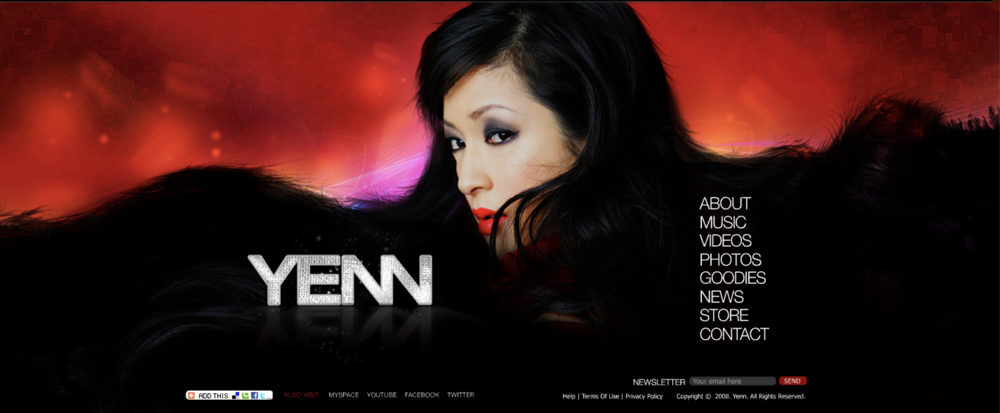
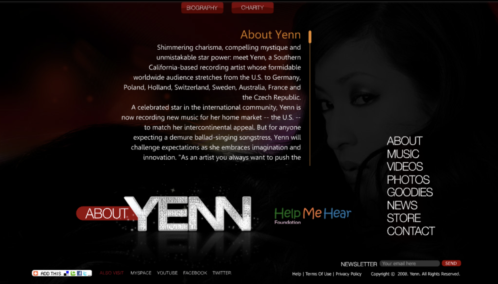
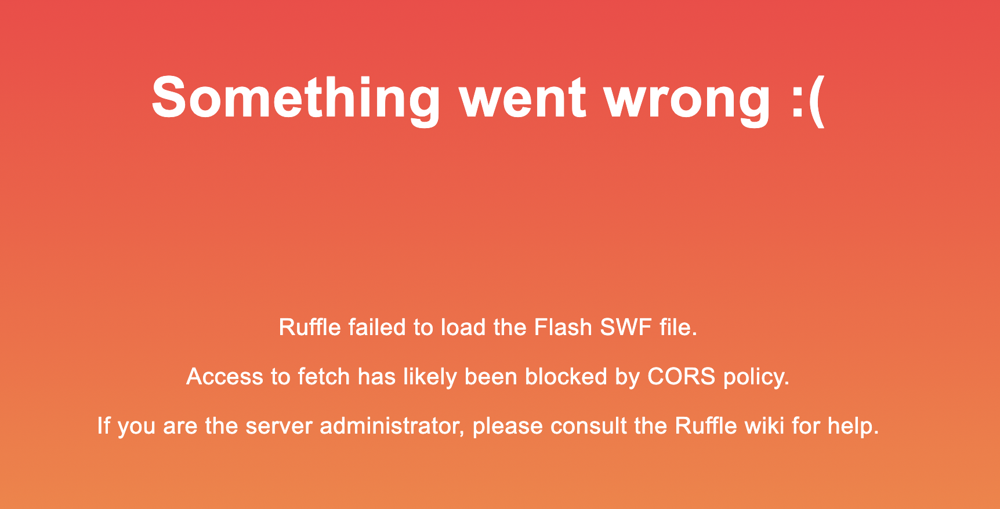
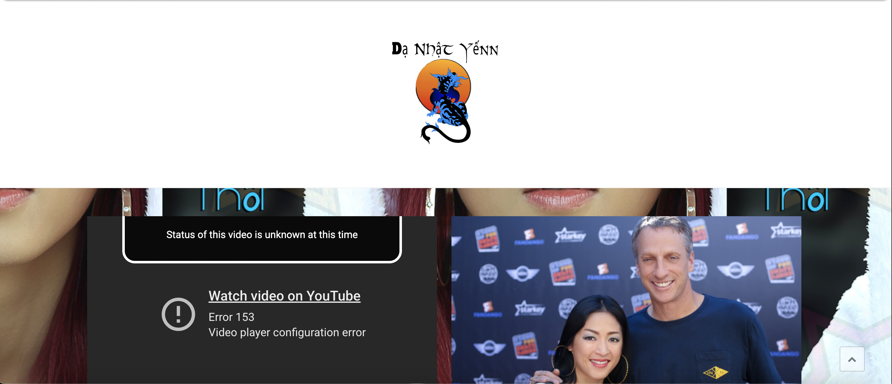
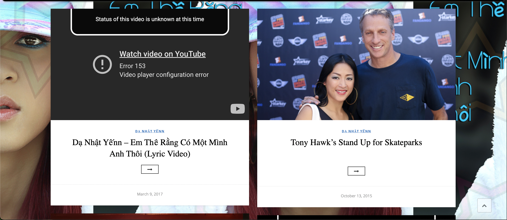

Surprise! Her career did not end with Asia Entertainment.
Sometime in 2008, she went independent and rebranded as
YENN.
She released original singles and EPs on
Soundcloud (Which has since been deleted) and YouTube.
She has not released music since 2018.


The entire site ran on Adobe Flash.
The Internet Archive was not able to recover the .swf files for the rest of the site.

Sometime in 2015, she switched urls again

